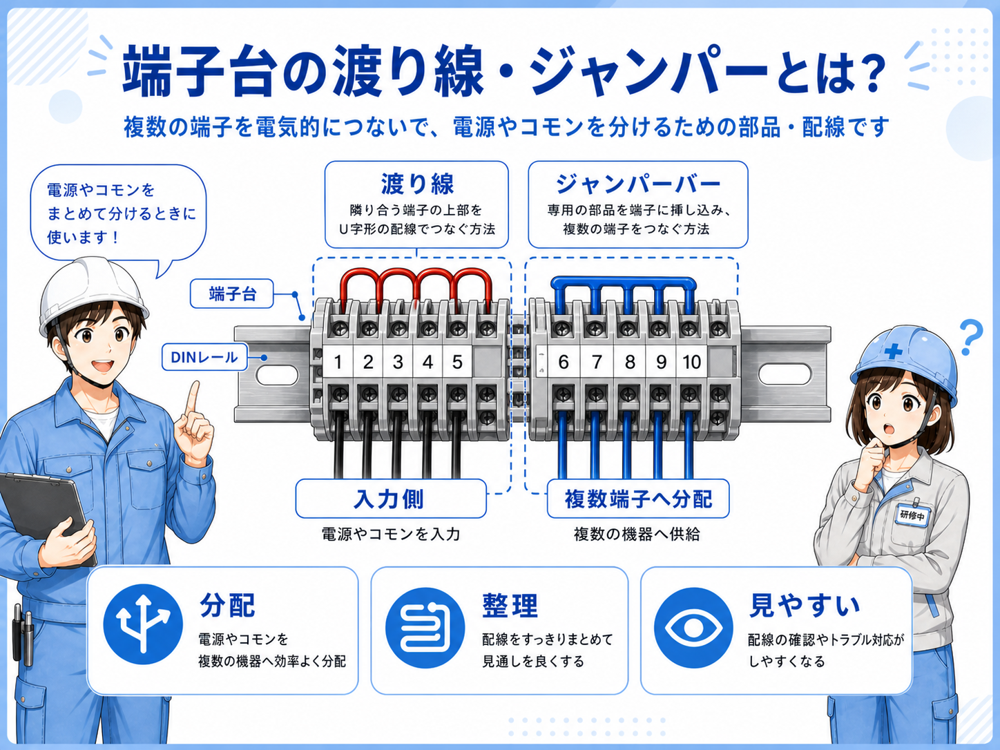
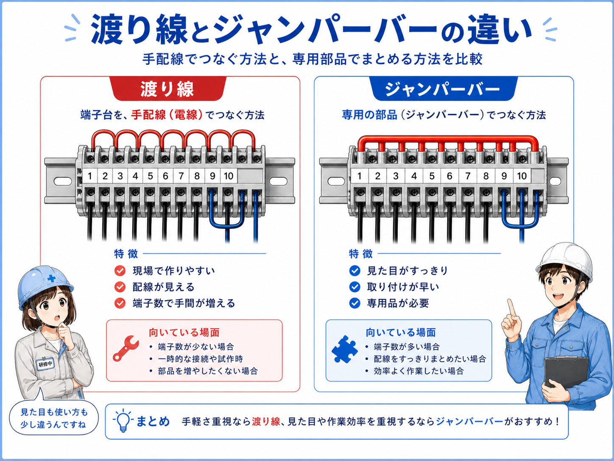
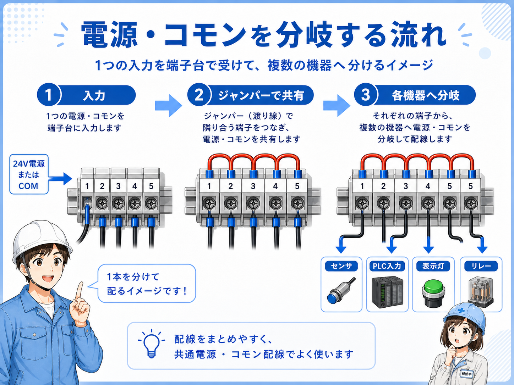

端子台の渡り線・ジャンパーとは
端子台の渡り線とは、隣の端子同士や複数の端子を電気的につなぐための線です。 たとえば、DC24Vを複数のセンサーへ分けたいとき、0Vを複数の回路で共通にしたいときなどに使います。
ジャンパーは、同じ目的で端子同士をつなぐための部品です。 線で渡す場合もあれば、端子台専用のジャンパーバーやショートバーでまとめて接続する場合もあります。
現場では、端子台に短い線が何本も入っていたり、金属バーで隣同士がつながっていたりします。 これは「同じ電源や同じコモンを分けている」ことが多いです。
まずはこう覚える
渡り線・ジャンパーは、端子台で電源やコモンを分けるためのつなぎです。1つの電源を複数の端子へ配るときに使う、と考えると分かりやすいです。

先輩端子台で隣同士がつながっている時は、だいたい電源やコモンを分けていることが多いよ。どこからどこまで同じ電位かを見るのが大事だね。

後輩短い線で隣へ渡してあるのは、同じ電源を配っている可能性があるんですね。
渡り線・ジャンパーの基本構成

たとえば、1つのDC24V電源から複数のセンサーへ電源を配りたい場合、端子台で24Vを複数端子へ渡します。 0V側も同じように、複数の機器へ共通で渡すことがあります。
PLC入力や出力のコモンでも、複数端子を共通化するために渡りが使われることがあります。 ただし、すべての端子をつなげばよいわけではありません。 図面でどこまでが同じグループかを確認します。
DC24Vを配る
センサーや表示灯などへ電源を分けるときに使います。
0Vを共通にする
複数機器の0Vやマイナス側をまとめることがあります。
コモンをまとめる
PLC I/Oのコモンをまとめる配線で出てくることがあります。
なぜ渡り線・ジャンパーが必要なのか
制御盤では、1つの電源やコモンを複数の回路で使うことが多いです。 そのたびに電源から1本ずつ線を引くと、配線が増えて分かりにくくなります。
端子台で渡りを作ると、電源やコモンを整理して分岐できます。 どこから電源が入り、どの端子まで同じ電位として配られているかが分かりやすくなります。
| 用途 | 渡り線・ジャンパーの役割 | 現場での見方 |
|---|---|---|
| センサー電源 | DC24Vや0Vを複数センサーへ配る | どの端子まで24V/0Vが渡っているかを見る |
| PLC入力コモン | 入力ユニットの共通側をまとめる | 入力グループとコモン範囲を確認する |
| PLC出力コモン | 出力側の共通電源を分岐する | 負荷電源と保護範囲を確認する |
| 表示灯・リレー | 共通電源や共通0Vを分ける | 渡り先の負荷と線番を確認する |
分岐を見える形にする
渡り線・ジャンパーは、電源やコモンの分岐を端子台上で見える形にする役割があります。図面と合わせて見ると、どの回路が同じ電位か追いやすくなります。
渡り線とジャンパーバーの違い

渡り線は、短い電線を使って隣の端子へ電気を渡す方法です。 現場で柔軟に作りやすい一方、線が増えると端子周りが混みやすくなります。
ジャンパーバーやショートバーは、端子台専用の部品で複数端子をまとめて接続します。 見た目がすっきりしやすく、同じ端子台シリーズでは扱いやすいことがあります。
| 項目 | 渡り線 | ジャンパーバー |
|---|---|---|
| 形 | 短い電線で端子同士を接続 | 専用のバーや金具で複数端子を接続 |
| 自由度 | 現場で長さや行き先を調整しやすい | 対応端子台やピッチに合わせる必要がある |
| 見た目 | 多くなると混みやすい | すっきりしやすい |
| 注意点 | 端子への入れすぎ、締付、線番に注意 | 不要な端子までつながないよう注意 |
つながる範囲を必ず確認
ジャンパーは便利ですが、意図しない端子までつながると誤動作や短絡の原因になります。どの端子からどの端子まで同じ電位にするのか、図面と実物で確認します。
端子台で電源を分岐する流れ

基本の流れは、電源、保護機器、端子台、渡り線・ジャンパー、各負荷の順です。 まずどこから電源が入っているかを確認し、そこからどの端子へ渡っているかを追います。
図面では、同じ線番や同じ電位の記号で表されていることがあります。 実物では、短い渡り線やジャンパーバーで端子同士がつながっている部分を見ます。
1. 電源の入口を見る
DC24Vや0Vがどの端子へ入っているかを確認します。
2. 渡り範囲を見る
どの端子からどの端子までつながっているかを見ます。
3. 負荷側へ追う
センサー、PLC、リレー、表示灯などの行き先を確認します。
4. 保護範囲を見る
保護機器の前後で、どこまで同じ電源かを確認します。
先輩渡りを見るときは、電源がどこから来て、どこまで同じ電位で配られているかを追うんだ。途中に保護機器があるかも大事だよ。
後輩ただ隣に渡っている、じゃなくて、電源の入口と出口まで見るんですね。
現場で見るときのポイント
現場で渡り線・ジャンパーを見るときは、まずどの端子までつながっているかを確認します。 隣同士がつながっているように見えても、途中で切れていたり、グループが分かれていたりすることがあります。
次に、保護機器との位置関係を見ます。 保護機器の前で分岐しているのか、後で分岐しているのかによって、異常時に切れる範囲が変わります。
また、改造時は特に注意が必要です。 既存のジャンパーに新しい端子を追加すると、意図しない回路まで同じ電源につながることがあります。
ここを覚える
渡り線・ジャンパーは便利ですが、つながる範囲を間違えるとトラブルになります。追加や変更をするときは、図面・線番・電圧・保護範囲を確認します。
渡り範囲
どこからどこまで同じ電位でつながっているかを確認します。
端子の締付
渡り線が緩んでいないか、端子に正しく入っているかを見ます。
保護範囲
ヒューズやCPの前後で、どこまで分岐しているかを確認します。
改造跡
追加ジャンパーや不要な渡りが残っていないかを確認します。
まとめ：渡り線・ジャンパーは端子台で電源を分けるためのつなぎ
端子台の渡り線・ジャンパーは、DC24V、0V、コモンなどを複数の端子へ分けるために使います。 制御盤では、センサー電源、PLC I/O、表示灯、リレーなどでよく関係します。
現場で見るときは、どこから電源が入り、どの端子まで渡っているかを確認します。 保護機器の前後、線番、図面、端子番号を合わせて見ると、分岐の範囲を理解しやすくなります。
この記事の結論
渡り線・ジャンパーは、端子台上で同じ電源やコモンを分けるための部品です。便利な一方で、つながる範囲を間違えるとトラブルになるため、図面と実物を必ず照合しましょう。